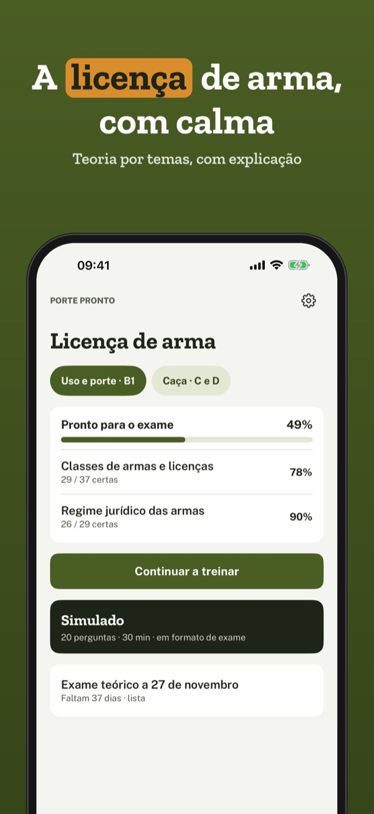
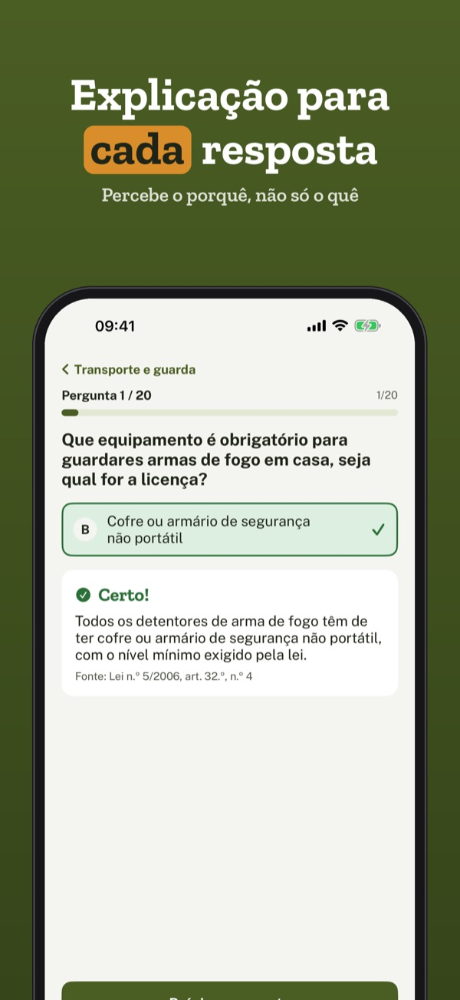
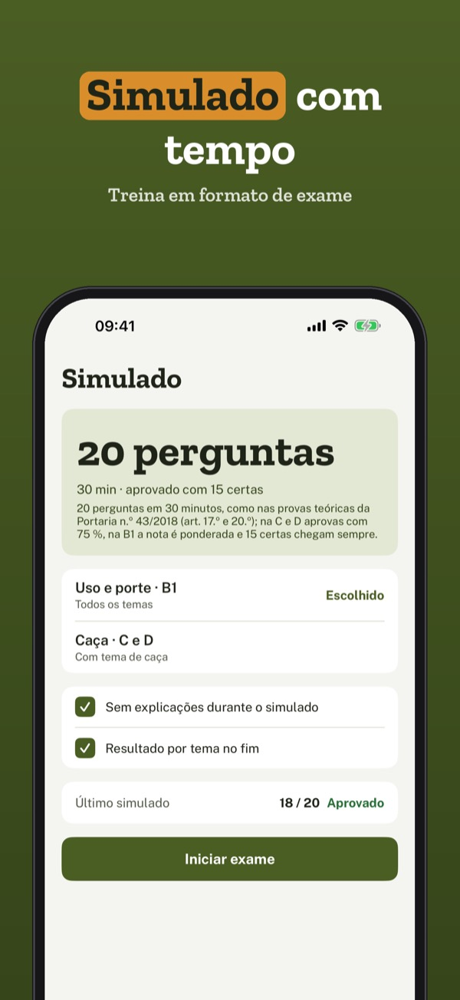
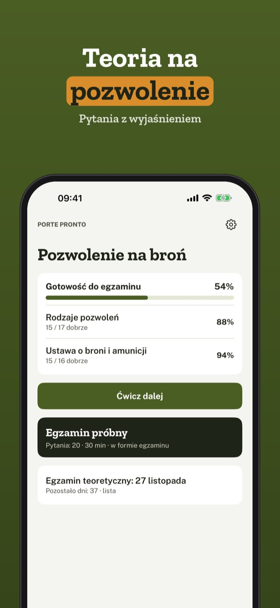
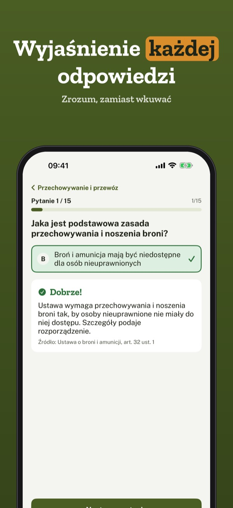
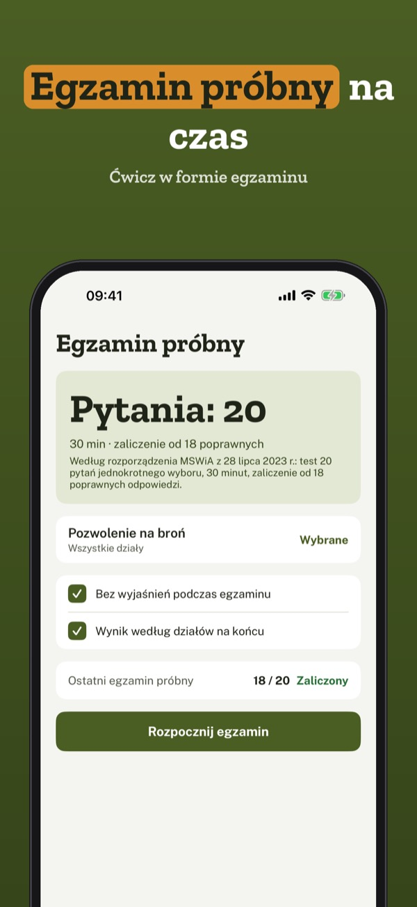
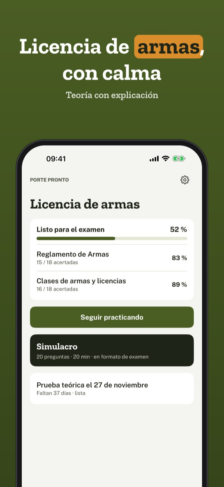
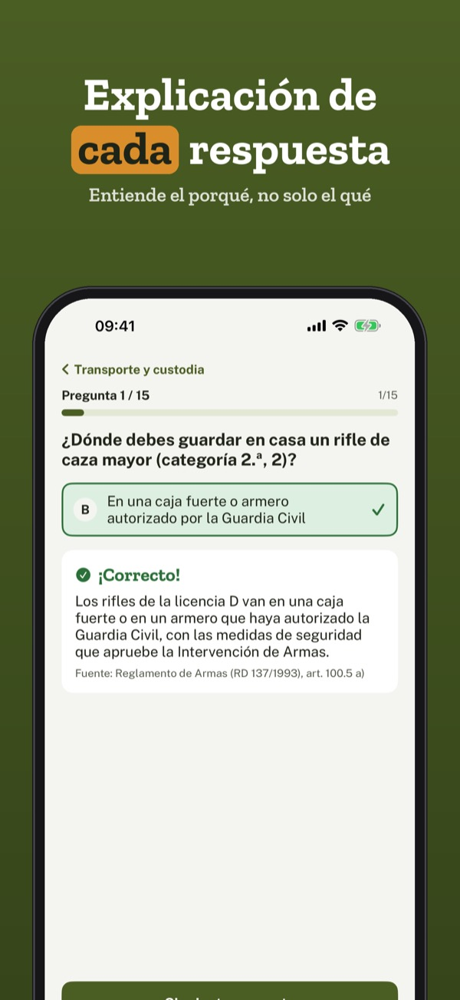
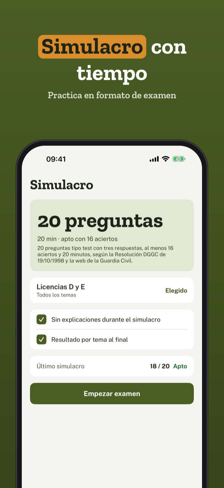

Teoria para o exame LUPA
Estuda a teoria da licença de uso e porte de arma: perguntas com explicação, simulado e lista para o dia do exame – em português e sem internet.



O Porte Pronto ajuda-te a estudar a teoria para a licença de arma em Portugal – com calma, segurança e explicação para cada resposta.
Podes treinar 20 perguntas, o glossário e a lista de verificação sem compra. A versão completa é uma compra única que desbloqueia todas as perguntas, simulados e estatísticas. Sem assinatura.
O Porte Pronto é uma app de estudo independente e não está ligado à PSP nem a outras autoridades. A licença obtém-se pelas vias legais.
Terms of Use (EULA): https://www.apple.com/legal/internet-services/itunes/dev/stdeula/
Privacy: https://baytechbv.github.io/privacy/licenca-arma-pt/
Teoria na pozwolenie
Ucz się teorii na pozwolenie na broń: pytania z wyjaśnieniem, egzamin próbny i lista na dzień egzaminu – po polsku i bez internetu.



Patent Klar pomaga spokojnie nauczyć się teorii na pozwolenie na broń – z wyjaśnieniem do każdej odpowiedzi.
20 pytań, słownik i listę kontrolną możesz używać bez zakupu. Pełna wersja to jednorazowy zakup, który odblokowuje wszystkie pytania, egzaminy próbne i statystyki. Bez subskrypcji.
Patent Klar jest niezależną aplikacją do nauki i nie jest powiązany z Policją ani WPA. Pozwolenie uzyskuje się zgodnie z prawem.
Terms of Use (EULA): https://www.apple.com/legal/internet-services/itunes/dev/stdeula/
Privacy: https://baytechbv.github.io/privacy/licenca-arma-pt/
Teoría para el examen
Estudia la teoría de la licencia de armas: preguntas con explicación, simulacros y lista para el día del examen – en español y sin internet.



Porte Pronto te ayuda a estudiar con calma la teoría para la licencia de armas – con explicación en cada respuesta.
Puedes practicar 20 preguntas, el glosario y la lista de comprobación sin compra. La versión completa es una compra única que desbloquea todas las preguntas, simulacros y estadísticas. Sin suscripción.
Porte Pronto es una app de estudio independiente y no está vinculada a la Guardia Civil ni a otras autoridades.
Terms of Use (EULA): https://www.apple.com/legal/internet-services/itunes/dev/stdeula/
Privacy: https://baytechbv.github.io/privacy/licenca-arma-pt/